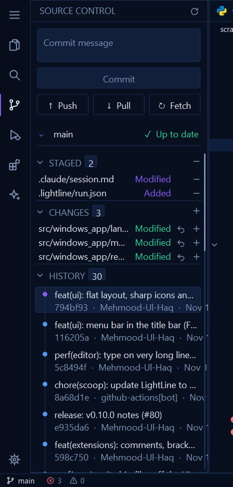

On the left is a screenshot of the panel today. On the right is the proposed panel, drawn at the same 125% scale in LightLine's own colours. Everything it shows already exists in LightLine: the commit box, staging, discarding, Push, Pull, Fetch, the branch and its ahead/behind counts, and History. The change is how it's laid out: less chrome above the files, file names you can read, and three times as many commits on screen.
Hover rows in the mock to see their buttons.
TodayScreenshot, 125% display

ProposedSame scale and data
What changes
Commit and Refresh move into the header, next to a ··· menu with Push, Pull, Fetch and Stage All / Unstage All. That's where VS Code keeps them. The header already draws Refresh; this adds two icons.
The message box is one line tall (30 px, was 54), and the placeholder tells you that Enter commits on the current branch.
One button that does the next thing. It shows Commit when there's a message, Push 2 commits when the branch is ahead and there's nothing to commit, and Pull 3 commits when it's behind. The ▾ beside it lists Commit, Push, Pull and Fetch. It's 28 px tall, down from 34.
The branch, Pull, Push and Fetch share one row (26 px), replacing the three big buttons and the branch row (34 + 38 px). The icon buttons show their counts (↓3, ↑2) only when there is something to pull or push.
File rows lead with the name. The row shows the file icon (from the icon theme, as in the Explorer), the name, then the folder dimmed. Today the path is cut off before the name: src/windows_app/lan….
Status is one coloured letter instead of a word: M modified, A added, U untracked, D deleted (the name is struck through), R renamed, ! conflicted. The colour shows the kind of change. Whether a file is staged is shown by its section, so the colour no longer has to say it (today staged files are violet and unstaged ones green).
Row buttons appear on hover, and stay on the selected row so the keyboard can reach them: Open File, Discard and Stage/Unstage. Section headers get Stage All, Unstage All and Discard All the same way. Today every row shows them all the time.
History is one line per commit (22 px, was 48). Each commit shows a graph dot, its subject and its age; the hash appears on hover. The newest commit gets a hollow violet dot and a main label instead of a highlighted card. Clicking a commit still puts its hash and subject in the status bar.
Square corners, 1 px lines, 22 px rows, matching the Explorer and the flat layout from #83. Section counts are small filled pills instead of bordered boxes.
In sizes
Measure (logical pixels)
Today
Proposed
Message box
54
30
Commit button
34
28
Push / Pull / Fetch plus the branch
34 + 38
26, one row
First file row starts at (from the top of the window)
about 276
about 162
Commit row height
48, two lines
22, one line
Commits visible in this window (5 changes shown)
6
about 20
Room for the file name in a 285 px panel
path cut off after ~22 characters, name hidden
name in full up to 150 px, then the folder
Speed
It's drawn with what LightLine already has. Rectangles, labels, the shared icon atlas, and the file icons the Explorer already rasterizes. Nothing new is loaded when the panel opens.
Painting gets cheaper. A commit row draws one line of text where it drew two. Each drawn line costs real time in GDI (about 0.6 M cycles a row), so a commit costs half what it did. The panel shows more commits, so a full redraw of it draws more rows in total, but that only happens when the panel opens or its list changes.
Hover redraws two rows: the one the mouse left and the one it entered, 2 × 22 px. It's a new Hot target, like the rail's, with no timer; the 90 ms fade follows the animations setting. Idle stays at 0 wakeups.
Ages like "9h" are worked out when History loads, on the worker that already runs git log (it asks for %ct as well). They aren't kept up to date by a timer; they refresh with the panel, as the list does today.
Open questions
Pull, Push and Fetch: icon buttons on the branch row (as drawn), or only in the ··· menu and the button's ▾, like VS Code? The row costs 26 px.
History: one line with the hash on hover (as drawn), or keep the author visible? The author could go in the dimmed text after the subject, at the cost of subject width.
Later, not in this change: a message box that wraps and grows up to 5 lines for longer messages, like VS Code. Today it's a single line of text; this design keeps that.